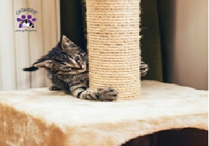

¿QUIENES SOMOS ?
somos una empresa que trabaja con responsabilidad, respeto,eficacia,dicplina,confianza para entregar lo mejor de nosotros como vendedores.
nuesta empresa trabaja en equipo, igualdad,liderazgo y creatividad para la satisfacer la necesidad de nuestros amigos gatunos.
|
.
CAT-HOUSE: es diseño, elaboración, estampados en
casas a base de cartón para gatos; ofreciendo diseños exclusivos sobre
medida y un amplio portafolio de accesorios para las casas de los gatos.
Para la marca CatHouse utilizamos una etiqueta de marca,
la cual es una etiqueta aplicada al producto o al empaque,
este tipo de etiqueta no posee mucha información y esta adherida
al empaque para que el comprador identifique que marca es el producto que compra.
Las casas de la marca cathouse son 100% en cartón son grandes,
cómodas para los gatos, se maneja 2 referencias las casas estándar
que serán todas de un mismo modelo y las casas personalizadas que se
diseñarán según las especificaciones del cliente estas casas personalizadas
tendrán algunos accesorios que se le pueden agregar (rascador y cascabeles) etc.
|
MISION: proteger y consentir las mascotas de nuestros clientes poniendo a
su alcance los mejores productos para el cuidado y bienestar de los mirringos
más consentidos de las familias, que garantice una vida plena saludable y muy
feliz con base en el compromiso, el servicio, la eficiencia y la responsabilidad
social con nuestros grupos de interés.

VISION: ser la empresa reconocida en el ámbito regional en el 2022,
en distribución y comercialización de los productos CAT HOUSE logrando llegar
a los corazones de nuestros clientes, superando sus expectativas y estableciendo
un fuerte vínculo que relacione a largo plazo. destacando la buena calidad,
variedad e innovación, a precios razonables.
CASA ESTANDAR
CASA PERSONALIZADA

|
1.4 VALORES CORPORATIVOS:
CAT HOUSE se identifica con los siguientes valores:
. compromiso
. respaldo y servicio.
. eficacia
. responsabilidad social.
Compromiso: estar dispuestos en todo momento a satisfacer las
necesidades de los clientes.
Respaldo y servicio: realizar un acompañamiento constante para
atender las preguntas y sugerencias de nuestros clientes.
Eficacia: ofrecerle al cliente lo que necesita, en el momento que lo requiera.
Responsabilidad social: tener conciencia de la actividad social para intervenir
positivamente, mejorando la calidad de vida individual y colectiva.
1.5.1 Objetivos generales:
la empresa cat house busca incorporar innovación para desarrollo de nuevos productos relacionados con casas para gatos.
Motivar a los dueños de gatos hacer sentir sus mascotas parte importante de su familia, que nos conlleve a incrementar
los niveles de participación del mercado y la fidelidad de los clientes.
Desarrollar el plan de negocios de cat house.8
1.5.1 objetivos específicos:
esta nueva innovación en casas para las mascotas a base de cartón busca principalmente la economía de las personas ya que
al hacer de cartón serán más accesibles y más llamativas para sus mascotas por la comodidad que les generara. Así mismo se
busca que la empresa sea importante e indispensable para los clientes.
. potencial del mercado:
Realizar un estudio de mercado para identificar la necesidad que tienen en cuanto a los accesorios que adquieren para sus mascotas.
. ventaja organizacional
La estrategia de la empresa será marcar diferencia en los gatos ya que son casas exclusivas que serán diseñadas y adornadas de acuerdo
a las necesidades del cliente brindando un servicio especial con un diseñador especializado en el tema, el cual tomara las medidas y
brindara apoyo en cuanto a modelos y colores.
. logística operativa
Se tiene planificado que en cuanto a la operación que tendrá cat house se pueda tener los materiales suficientes para poder cubrir
la demanda del producto además se contrataran los servicios de una empresa de logística para poder enviar el producto al lugar donde
lo requiera el cliente para poder satisfacer la necesidad que pueden presentar los clientes.
. financiero
Se debe tener en cuenta que esta empresa es nueva en el mercado, por lo tanto, no disponemos de valores históricos, los cuales nos arrojen
ventas realizadas durante el año, meses en los que aumentan las ventas, cifras certeras de la inversión que requiere como tal el negocio.
inicio-
servicios-
nosotros-
contatos-
copyright 2011
mandanos un mesaje via gmail a
house@gmail.com
|